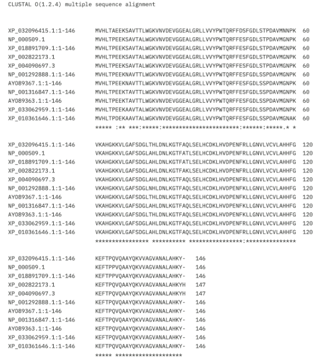

Alinhamento e Conservação de Sequências Múltiplas
Usando as sequências homólogas encontradas, utilizamos o Clustal Omega para o alinhamento.
Legenda
(*) resíduos idênticos; (:) resíduos similares, mesmo aminoácido, mas com propriedades químicas diferentes; ( ) resíduos todos diferentes; (.) resíduos parcialmente semelhantes, havendo semelhanças biológicas e funcionais.
Análise do Alinhamento e Conservação das Sequências Homólogas
Analisando as posições do alinhamento, verificamos que existem algumas com a mesma cor e outras onde esta é variável. Isso indica que, no primeiro caso, os aminoácidos são altamente conservados, o que sugere uma importância funcional (ex.: transporte de oxigénio) e estrutural (ex.: manterem as mesmas estruturas secundárias e terciárias). No segundo caso, existe variabilidade entre as sequências proteicas, ou seja, houve adaptações especificas a diferentes ambientes ou funções biológicas. É importante saber que a função e a estrutura apresentam uma correlação, ou seja, influenciam-se mutuamente.
Um exemplo:
As sequências XP_018891709.1 e XP_002822173.1 são idênticas na maioria das posições, sugerindo uma relação evolutiva próxima. E as XP_033062959.1 e XP_010361646.1 também mostram alta similaridade, indicando que esses organismos divergiram de mesmo ancestral comum.
Primeira região (1-60)
Nesta região existem bastantes conservações. Contudo, com divergências pontuais. Por exemplo, a primeira sequência (XP_032096415.1) apresenta um resíduo inicial diferente quando comparada com as outras.
XP_032096415.1: "MVHLTAEEKSAVTTLWGKVNVDEVGGEALGRLLVVYPWTQRFFDSFGDLSTPDAVMNNPK"
Outras vezes: "MVHLTPEEKSAVTALWGKVNVDEVGGEALGRLLVVYPWTQRFFESFGDLSTPDAVMGNPK"
Segunda Região (61-120)
As variações que ocorrem nesta região são quase não notórias. Temos o exemplo, da zona que engloba estes aminoácidos “AHLDNLKGTF", apesar desta ser a sequência da maioria, existem algumas sequências proteicas que iniciam com “THL” ou “NHL”.
Terceira Região (121-146/147)
Outra região com elevada conservação. A principal diferença é algumas sequências terminarem com “HKY” e outras com “HKYH”.
Alinhamento e Conservação com outras Sequências
Ao analisar, utilizando o Genome Browser, o exemplo dos alinhamentos com 100 vertebrados, verificamos que se mantêm muitas sequências conservadas. Tal, pode ser verificado pelos picos positivos elevados observados na figura abaixo. Os picos negativos (rosa/vermelho) são zonas menos conservadas do que o normal e muito variáveis.